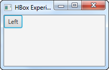
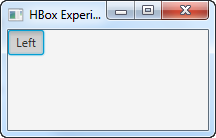
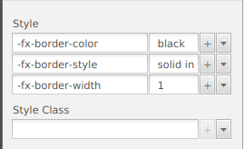
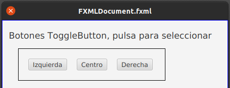
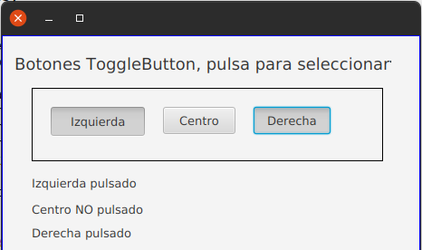
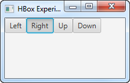
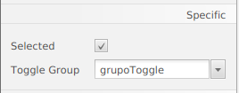
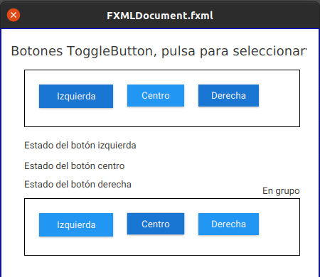
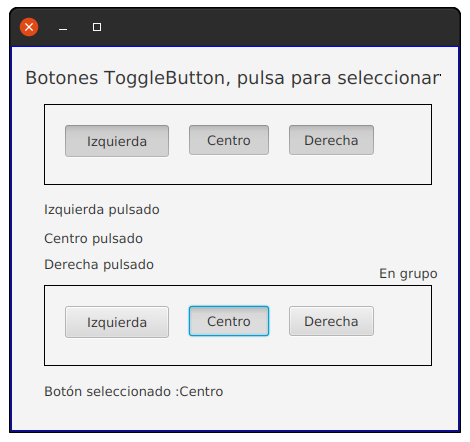

JavaFX ToggleButton
Un JavaFX ToggleButton es un botón que se puede seleccionar o no seleccionar. Es un botón que permanece presionado cuando le hecemos click, y cuando lo presionas la próxima vez, vuelve a estar sin presionar. Activado - no activado. El JavaFX ToggleButton está representado por la clase javafx.scene.control.ToggleButton.
Creación de un botón ToggleButton
Se crea un ToggleButton de JavaFX creando una instancia de la clase ToggleButton. Por ejemplo:
ToggleButton toggleButton1 = new ToggleButton("Izquierda");Añadir un ToggleButton al gráfico de escena
Para hacer visible un ToggleButton, debes añadirlo al gráfico de escena JavaFX. Esto significa anadirlo a una escena o como elemento secundario de un diseño adjunto a un objeto de escena.
Aquí hay un ejemplo que adjunta un JavaFX ToggleButton al gráfico de escena:
import javafx.application.Application;
import javafx.scene.Scene;
import javafx.scene.control.ToggleButton;
import javafx.scene.layout.HBox;
import javafx.stage.Stage;
public class ToggleButtonExperiments extends Application {
@Override
public void start(Stage primaryStage) throws Exception {
primaryStage.setTitle("HBox Experiment 1");
ToggleButton toggleButton1 = new ToggleButton("Left");
HBox hbox = new HBox(toggleButton1);
Scene scene = new Scene(hbox, 200, 100);
primaryStage.setScene(scene);
primaryStage.show();
}
public static void main(String[] args) {
Application.launch(args);
}
}La aplicación resultante de ejecutar el código de ejemplo anterior se puede ver en las siguientes dos capturas de pantalla. La primera captura de pantalla muestra un ToggleButton que no está presionado, y la segunda captura de pantalla muestra el mismo ToggleButton presionado (seleccionado, activado, etc.):

En Scene Builder arrastraremos el control (ToggleButton) a nuestra escena.
IMPORTANTE: añadir un id al control en la sección code del ToggleButton, por ejemplo idIzq.
Como ejemplo hemos colocado tres ToggleButton dentro de un HBox y de paso le hemos puesto un borde al mismo, solo hay que escribir su estilo:

A los tres ToggleButton le hemos puesto los id: idIzq, idCen e idDer.

Texto del botón de ToggleButton
Puedes configurar o cambiar el texto de un JavaFX ToggleButton a través de su método setText(). Por ejemplo:
ToggleButton toggleButton = new ToggleButton("Toggle This!");
toggleButton.setText("New Text");ToggleButton Font
Puedes configurar la fuente que se usará para representar el texto del botón de un JavaFX ToggleButton a través de su método setFont(). Por ejemplo:
ToggleButton toggleButton = new ToggleButton("Toggle This!");
Font arialFontBold36 = Font.font("Arial", FontWeight.BOLD, 36);
toggleButton.setFont(arialFontBold36);Lectura del estado seleccionado
La clase ToggleButton tiene un método llamado isSelected() que nos permite determinar si el ToggleButton está seleccionado (presionado) o no. El método isSelected() devuelve un booleano con el valor verdadero si se selecciona ToggleButton y falso si no.
Por ejemplo:
isSelected = toggleButton1.isSelected();Vamos a hacer que se muestre un un Label el estado de cada botón, para ellos añadimos tres Label y les asignamos sus correspondientes id:

Y el controlador:
@FXML
private void verEstadoGrupo(ActionEvent event) {
if (idIzq.isSelected())
idLabIzq.setText("Izquierda pulsado");
else
idLabIzq.setText("Izquierda NO pulsado");
if (idCen.isSelected())
idLabCen.setText("Centro pulsado");
else
idLabCen.setText("Centro NO pulsado");
if (idDer.isSelected())
idLabDer.setText("Derecha pulsado");
else
idLabDer.setText("Derecha NO pulsado");
}ToggleGroup
Podemos agrupar instancias de JavaFX ToggleButton en un ToggleGroup. Un ToggleGroup permite alternar (presionar) como máximo un ToggleButton en cualquier momento. Las instancias de ToggleButton en un ToggleGroup funcionan de manera similar a los botones de opción.
Por ejemplo:
import javafx.application.Application;
import javafx.scene.Scene;
import javafx.scene.control.ToggleButton;
import javafx.scene.control.ToggleGroup;
import javafx.scene.layout.HBox;
import javafx.stage.Stage;
public class ToggleButtonExperiments extends Application {
@Override
public void start(Stage primaryStage) throws Exception {
primaryStage.setTitle("HBox Experiment 1");
ToggleButton toggleButton1 = new ToggleButton("Left");
ToggleButton toggleButton2 = new ToggleButton("Right");
ToggleButton toggleButton3 = new ToggleButton("Up");
ToggleButton toggleButton4 = new ToggleButton("Down");
ToggleGroup toggleGroup = new ToggleGroup();
toggleButton1.setToggleGroup(toggleGroup);
toggleButton2.setToggleGroup(toggleGroup);
toggleButton3.setToggleGroup(toggleGroup);
toggleButton4.setToggleGroup(toggleGroup);
HBox hbox = new HBox(toggleButton1, toggleButton2, toggleButton3, toggleButton4);
Scene scene = new Scene(hbox, 200, 100);
primaryStage.setScene(scene);
primaryStage.show();
}
public static void main(String[] args) {
Application.launch(args);
}
}Resultado:

En Scene Builder, seleccionamos los botones que queremos que formen el grupo y en la sección propierties, en el campo Toggle Group, añadimos un nombre de grupo.

También podemos marcar como Selected al botón que por defecto aparecerá seleccionado.

Lectura del estado de un ToggleGroup
Podemos leer qué ToggleButton de un ToggleGroup está seleccionado (presionado) usando el método getSelectedToggle(), así:
ToggleButton seleccionadoToggleButton =(ToggleButton) toggleGroup.getSelectedToggle();Si no se selecciona ningún ToggleButton, el método getSelectedToggle() devuelve null.
En su controlador y añadiendo una etiqueta para mostrar el botón seleccionado:

@FXML
private void verEstadoGrupo(ActionEvent event) {
ToggleButton seleccionadoToggleButton =(ToggleButton) grupoToggle.getSelectedToggle();
if (seleccionadoToggleButton!=null)
idLabGrupo.setText("Botón seleccionado :"+seleccionadoToggleButton.getText());
}